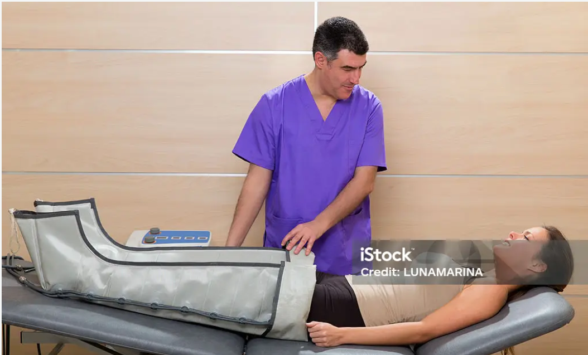

Treatment Guide
This section covers different types of leg injuries: muscle, bone, and neurological. Each type includes recommended steps for recovery and prevention.
Muscle Injuries

Muscle injuries are common during sports or daily life. Proper care helps prevent long-term issues.
- Immediate Care: Follow the R.I.C.E. method – Rest, Ice, Compression, and Elevation.
- Stretching: Start gentle stretches after pain decreases.
- Strengthening: Begin with isometric exercises, then add light resistance.
- Mobility & Balance: Include balance drills and gradual motion recovery.
- Prevention: Warm up and increase intensity slowly.
Bone Injuries

Bone injuries require immediate medical attention and careful rest to heal properly.
- Immediate Care: Immobilize the area and seek medical evaluation (X-ray).
- Treatment: Follow doctor's advice for casting or surgery if needed.
- Nutrition: Ensure calcium, vitamin D, and protein intake.
- Rehabilitation: Gradual physical therapy to rebuild strength and flexibility.
- Prevention: Use proper gear and maintain strong supporting muscles.
Neurological Injuries
Nerve-related injuries require professional evaluation and specialized recovery approaches.
- Consult a physician for diagnosis and treatment plan.
- Monitor symptoms such as pain, tingling, or numbness.
- Perform gentle motor control and coordination exercises.
- Prioritize safety and balance to prevent falls.